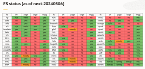

The state of the page in 2024
The first step of this transition, he began, was moving much of the information traditionally stored in the kernel's page structure into folios instead, then converting users of struct page to use the new structure. The initial goal was to provide a type-safe representation for compound pages, but the scope has expanded greatly since then. That has led to a bit of ambiguity: what, exactly, is a folio in current kernels? For now, a folio is still defined as "the first page of a compound page".
By the end of the next phase, the plan is for struct page to shrink down to a single, eight-byte memory descriptor, the bottom few bits of which describe what type of page is being described. The descriptor itself will be specific to the page type; slab pages will have different descriptors than anonymous folios or pages full of page-table entries, for example.
Among other motivations, a key objective behind the move to descriptors is reducing the size of the memory map — the large array of page structures describing every physical page in the system. Currently, the memory-map overhead is, at 1.6% of the memory it describes, too high. On systems where virtualization is used, the memory map is also found in guests, doubling the memory consumed by the memory-map. By moving to descriptors, that overhead can be reduced to 0.2% of memory, which can save multiple gigabytes of memory on larger systems.
Getting there, though, requires moving more information into the
folio structure. Along the way, concepts like the pin count for a
page can be clarified, cleaning up some longstanding problems in the
memory-management subsystem. This move will, naturally, increase the size
of the folio structure, to a point where it will be larger than
struct page. The advantage, though, is that only one
folio structure is needed for all of the base pages that make up
the folio. For two-page folios, the total memory use is about the same;
for folios of four pages or more, the usage is reduced. If the kernel is
caching the contents of a 1GB file, it currently needs
60MB 16MB of page structures. If that caching is
done entirely with base pages, that overhead will increase to 23MB in the
future. But, if four-page folios are used instead, it drops to 9MB total.
Some types of descriptors, including those for slab pages and page-table entries, have already been introduced. The page-table descriptors are quite a bit smaller than folios, since there are a number of fields that are not needed. For example, these pages cannot be mapped into user space, so there is no need for a mapping count.
Wilcox put up a plot showing how many times struct page and struct folio are mentioned in the kernel since 2021. On the order of 30% of the page mentions have gone away over that time. He emphasized that the end goal is not to get rid of struct page entirely; it will always have its uses. Pages are, for example, the granularity with which memory is mapped into user space.
Since last year's update, quite a lot of work has happened within the memory-management subsystem. Many kernel subsystems have been converted to folios. There is also now a reliable way to determine whether a folio is part of hugetlbfs, the absence of which turned out to be a bit of a surprising problem. The adoption of large anonymous folios has been a welcome improvement.
The virtual filesystem layer has also seen a lot of folio-related work. The sendpage() callback has been removed in favor of a better API. The fs-verity subsystem now supports large folios. The conversion of the buffer cache is proceeding, but has run into a surprise: Wilcox had proceeded with the assumption that buffer heads are always attached to folios, but it turns out that the ext4 filesystem allocates slab memory and attaches that instead. That usage isn't wrong, Wilcox said, but he is "about to make it wrong" and does not want to introduce bugs in the process.
Avoiding problems will require leaving some information in struct page that might have otherwise come out. In general, he said, he would not have taken this direction with buffer heads had he known where it would lead, but he does not want to back it out now. All is well for now, he said; the ext4 code is careful not to call any functions on non-folio-backed buffer heads that might bring the system down. But there is nothing preventing that from happening in the future, and that is a bit frightening.
The virtual filesystem layer is now allocating and using large folios through the entire write path; this has led to a large performance improvement. Wilcox has also added an internal function, folio_end_read(), that he seemed rather proud of. It sets the up-to-date bit, clears the lock bit, checks for others waiting on the folio, and serves as a memory barrier — all with a single instruction on x86 systems. Various other helpers have been added and callbacks updated. There is also a new writeback iterator that replaces the old callback-based interface; among other things, this helps to recover some of the performance that was taken away by Spectre mitigations.

The next step for folios is to move the mapping and index fields out of struct page. These fields could create trouble in the filesystems that do not yet support large folios, which is almost all of them. Rather than risk introducing bugs when those filesystems are converted, it is better to get those fields out of the way now. A number of page flags are also being moved; flags like PageDirty and PageReferenced refer to the folio as a whole rather than to individual pages within it, and thus should be kept there. There are plans to replace the write_begin() and write_end() address-space operations, which still use bare pages.
Beyond that, there is still the task of converting a lot of filesystems, many of which are "pseudo-maintained" at best. The hugetlbfs subsystem needs to be modernized. The shmem and tmpfs in-memory filesystems should be enhanced to use intermediate-size large folios. There is also a desire to eliminate all higher-order memory allocations that do not use compound pages, and thus cannot be immediately changed over to folios; the crypto layer has a lot of those allocations.
Then, there is the "phyr" concept. A phyr is meant to refer to a physical range of pages, and is "what needs to happen to the block layer". That will allow block I/O operations to work directly on physical pages, eliminating the need for the memory map to cover all of physical memory.
It seems that there will be a need for a khugepaged kernel thread that will collapse mid-size folios into larger ones. Other types of memory need to have special-purpose memory descriptors created for them. Then there is the KMSAN kernel-memory sanitizer, which hasn't really even been thought about. KMSAN adds its own special bits to struct page, a usage that will need to be rethought for the folio-based future.
An important task is adding large-folio support to more filesystems. In the conversions that Wilcox has done, he has avoided adding that support except in the case of XFS. It is not an easy job and needs expertise in the specific filesystem type. But, as the overhead for single-page folios grows, the need to use larger folios will grow with it. Large folios also help to reduce the size of the memory-management subsystem's LRU list, making reclaim more efficient.
Ted Ts'o asked how important this conversion is for little-used filesystems;
does VFAT need to be converted? Wilcox answered that it should be done for
any filesystem where somebody cares about performance. Dave Chinner added
that any filesystem that works on an NVMe solid-state device will need
large folios to perform well. Wilcox closed by saying that switching to
large folios makes compiling the kernel 5% faster, and is also needed to
support other desired features, so the developers in the room should want
to do the conversion sooner rather than later.
| Index entries for this article | |
|---|---|
| Kernel | Memory management/Folios |
| Conference | Storage, Filesystem, Memory-Management and BPF Summit/2024 |
Posted May 15, 2024 15:05 UTC (Wed)
by Paf (subscriber, #91811)
[Link]
Posted May 15, 2024 17:39 UTC (Wed)
by WolfWings (subscriber, #56790)
[Link] (7 responses)
I get it, it's not performance critical so the 'benefits' are a wash, but calling it "little used" seems like they forgot for a moment how it got a second lease on life in recent years.
Posted May 15, 2024 22:34 UTC (Wed)
by Kamilion (subscriber, #42576)
[Link] (2 responses)
Posted May 15, 2024 22:45 UTC (Wed)
by dezgeg (guest, #92243)
[Link] (1 responses)
Posted May 16, 2024 0:23 UTC (Thu)
by WolfWings (subscriber, #56790)
[Link]
I'm unaware of any UEFI firmware on x86 at least that supports exFAT, broadly speaking it's only ever been supported for 32GB and larger volumes because it started as literally the "64GB and larger flash card" option, and the UEFI "ESP" partition is rarely more than 500MB.
In theory it can be used for that, but it'd be using unusually small cluster sizes which are almost never seen in the wild so vendors never test against them because they're not required to be supported.
Posted May 16, 2024 4:08 UTC (Thu)
by willy (subscriber, #9762)
[Link]
I think it would make a lovely project for someone to convert the FAT FS from buffer_heads to iomap. That way you'd get large folio support basically for free.
It's probably even a useful thing to do. The storage vendors are threatening us with 16KiB sector sizes and while the block layer should support this nicely, I will have a bit more confidence in the iomap layer. I hope to finish reviewing the bs>PS patches tomorrow.
Posted May 16, 2024 7:45 UTC (Thu)
by Wol (subscriber, #4433)
[Link] (2 responses)
Cheers,
Posted May 16, 2024 18:30 UTC (Thu)
by jem (subscriber, #24231)
[Link] (1 responses)
Posted May 16, 2024 18:44 UTC (Thu)
by farnz (subscriber, #17727)
[Link]
My laptop uses 1 GiB pages for most of the direct map of physical memory. Your UEFI System Partition would fit in one page :-)
Posted May 19, 2024 17:24 UTC (Sun)
by rharjani (subscriber, #87278)
[Link] (1 responses)
I didn't get the calculation here. If 1GB file uses struct page to cache the file contents today, isn't it 16MB in total (1G/ 64bytes) (since sizeof a page structure is 64bytes). So where does 60MB came from?
Continuing to the next line.. I think +23MB is assuming the size of struct folio will grow (which is also something not very clear to me as how exactly?). So "+23MB" will depend upon how much the struct folio will grow. Looks like that part of information is missed?
It will be helpful to get the answers to above questions please. Or maybe I will wait for the youtube video to come and try to figure out.
Posted May 19, 2024 18:50 UTC (Sun)
by willy (subscriber, #9762)
[Link]
To re-run the calculation, 1GiB/4KiB * 64 is 16MiB. 1GiB/4KiB * 88 is 23MiB. 1GiB/16KiB * 144 is 9.2MiB.
To explain those numbers, we need 8bytes/page for the memdesc. An order-0 folio is estimated to be 80 bytes (need to include pfn and needs to be a multiple of 16 bytes). A higher order folio will probably be 112 bytes for extra mapcount information and the deferred split list. Plus four 8byte memdescs gets us to 144 bytes.
Hope that's helpful. Let me know if I skipped a necessary step.
The state of the page in 2024
The state of the page in 2024
The state of the page in 2024
The state of the page in 2024
The state of the page in 2024
The state of the page in 2024
The state of the page in 2024
Wol
The state of the page in 2024
The state of the page in 2024
The state of the page in 2024
And that info about increase in size of struct folio may clarify how order-2 (four-page) folios will drop the use to 9MB total?
The state of the page in 2024